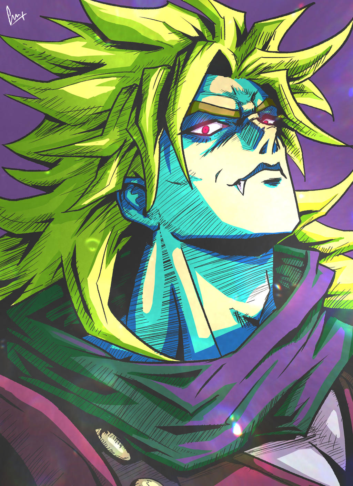
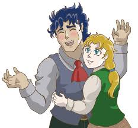

Jonathan est le personnage principale. Il est issue de la famille joestar qui possède le masque des vampires. Il a un chien Danny, une copine Erina Pendleton et unpère George Joestar. Il habite un manoir à Londre. Sa mère est morte dans un accidenten calèche, elle s'est sacrifié pour protéger Jonathan.
Dio Brandoest le fils de Dario Brando qui a fait croire à George Joestar qu'il avait sauvé lui et sa famille d'un accident en calèche alors qu'il voulait juste les dépouiller. Il est ensuite devenu le frère de Jonathan. Ce qui ne l'a pas empêcher de tuer son chien et d'embrasser sa copine.
Dio Brando est un garçon qui a grandi dans un environnement très dur. Son père, Dario Brando, est pauvre, violent et ne s’occupe pas bien de lui. Après un accident impliquant la famille Joestar, Dario fait croire à George Joestar qu’il a voulu l’aider, alors qu’en réalité il essayait de le voler. George pense lui devoir la vie et garde cette histoire en tête pendant des années. Plus tard, après la mort de Dario, Dio se rend chez les Joestar. George l’accueille par respect pour son père et l’adopte. Dio devient alors le frère de Jonathan Joestar. Jonathan est quelqu’un de calme, honnête et respectueux. Il veut toujours faire ce qui est juste. Dio, lui, est ambitieux et cruel. Il ne supporte pas Jonathan et veut lui prendre tout ce qu’il possède. Très vite, Dio commence à rendre la vie de Jonathan insupportable . Il le provoque sans arrêt, le bat, détruit ce qu’il aime et cherche à le briser moralement. Il fait du mal au chien de Jonathan et humilie Erina, la fille que Jonathan aime, uniquement pour le faire souffrir. Devant George Joestar, Dio cache son vrai visage et se montre parfait, ce qui empêche Jonathan d’être cru. En grandissant, Dio devient de plus en plus dangereux. Jonathan remarque son comportement étrange et commence à enquêter. Il découvre qu’un ancien masque en pierre, conservé par la famille Joestar, est lié aux plans de Dio. En même temps, George Joestar tombe malade. Jonathan comprend que Dio est responsable et tente de l’arrêter. Coincé, Dio utilise le masque de pierre et se transforme en vampire. Il obtient des pouvoirs terrifiants et n’a plus aucune pitié. Dans le chaos, George Joestar meurt en protégeant son fils. La maison des Joestar est détruite et Dio s’enfuit. Jonathan décide alors de poursuivre Dio pour mettre fin à ses crimes. Il rencontre Will A. Zeppeli, un homme qui lui apprend le Hamon, une énergie qui passe par la respiration et permet de combattre les vampires. Jonathan s’entraîne dur, malgré la douleur, et devient plus fort mentalement et physiquement. Avec l’aide de Zeppeli et d’autres compagnons, Jonathan affronte les monstres créés par Dio. Les combats sont difficiles et coûteux. Zeppeli finit par donner sa vie pour permettre à Jonathan de continuer sa mission. Jonathan avance malgré la tristesse et la fatigue. Jonathan finit par affronter Dio et parvient à l’arrêter. Mais l’histoire ne se termine pas là. Dio survit et attaque une dernière fois sur un bateau. Jonathan est gravement blessé, mais il choisit de sauver Erina plutôt que lui-même. Il meurt en protégeant les autres, prouvant qu’il est resté fidèle à ses valeurs jusqu’à la fin. Phantom Blood est donc une histoire de rivalité, de vengeance et de sacrifice, montrant la naissance de l’ennemi principal de la famille Joestar et le courage de Jonathan.
Speedwagon était le chef dans gang en angleterre lorsqu'il a rencontré Jonathan. Il a pensé que Jonathan était une proie facile et est donc parti l'attaquer. Mais quand il a vu qu'il se faisait dominé il a tout de suite prit son parti dans le conflit avec Dio
Erina est la copine de Jonathan qui deviendra ensuite sa femme. Elle aura survécu au naufrage du bateau et aura comme enfant le père de Joseph.